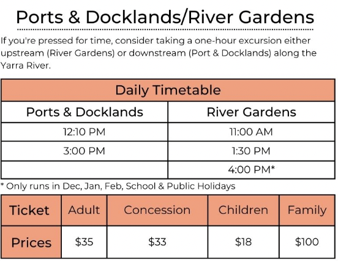
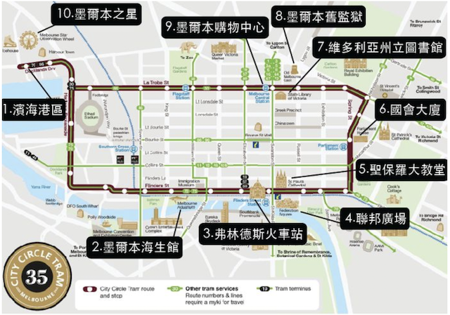

維多利亞國家美術館
10:00–16:00
時間表:
9:00
王子橋南岸散步
王子橋下便是墨爾本美麗的雅拉河（Yarra River），美麗的雅拉河兩岸都是綠地、豪宅，一路流經墨爾本精華地帶，透過遊河的方式，能從河道欣賞墨爾本如今綠化的美麗樣貌。
2.維多利亞藝術中心Arts Centre Melbourne
3.維多利亞國家美術館National Gallery of Victoria
11:00~12:15
亞拉河游船

乘坐環市電車: 電車由費蓮達街火車站（Flinders Street Station）前往DOCKLANDS，要做Clockwise到D4

12:30
回到飯店午餐/休息
14:30
利本・李莊園 Rippon Lea Estate
費蓮達火車站 - 搭乘Sandringham - 15 分 (6 個停靠站) Ripponlea Station
16:00
下午茶/麵包店
1.Plain Sailing(早午餐/午餐)
Bakers Delight Elwood(麵包店)
16:30
埃爾伍德海灘Elwood Beach
餐廳:Elwood Bathers(Elwood 公園)
17:00
Point Ormond Lookout